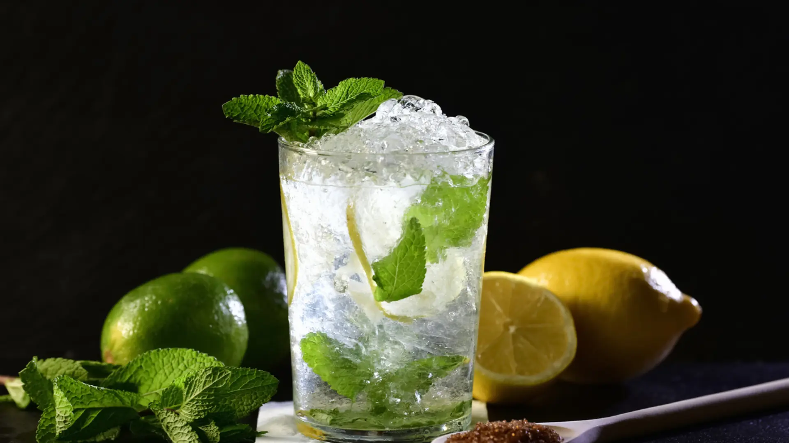

mojito
Ingredientes
- hojas de hierbabuena o menta
- 2 cucharaditas de azúcar
- 30 ml de jugo de limón
- 60 ml de ron blanco
- Agua con gas o soda
- Hielo en cubos
- 1 ramita de hierbabuena para decorar(super opcional)
procedimiento de preparacion
-
Prepara el vaso (preferiblemete un vaso alto) y Coloca hojas de hierbabuena y las 2 cucharadas de azúcar(lo puede reemplazar por sirope y/o jarabe de goma).
-
Vierte 30 ml de jugo de limón sobre la hierbabuena y el azúcar.
-
Macera o Aplasta (majar) suavemente las hojas con un mortero o cuchara para liberar el aroma, sin romperlas demasiado.
-
Vierte 60 ml de ron blanco en el vaso.
-
Añade al vaso con hielo en cubos hasta arriba.
-
Completa agua con gas o soda (tambien se puede utilizar gaseosac sprite) hasta llenar el vaso.
-
Mezcla suavementecon una cuchara larga para integrar el sabor de los ingredientes.
-
decora con una ramita de hierbabuena en la parte superior y tambien con una rodaja de limon(ya a su gusto).
